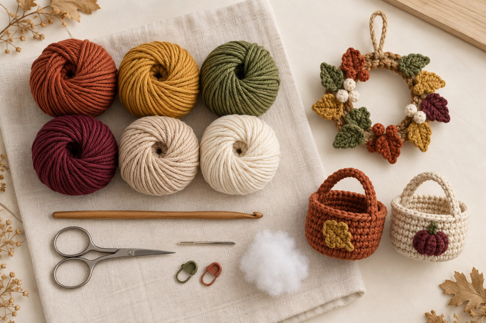
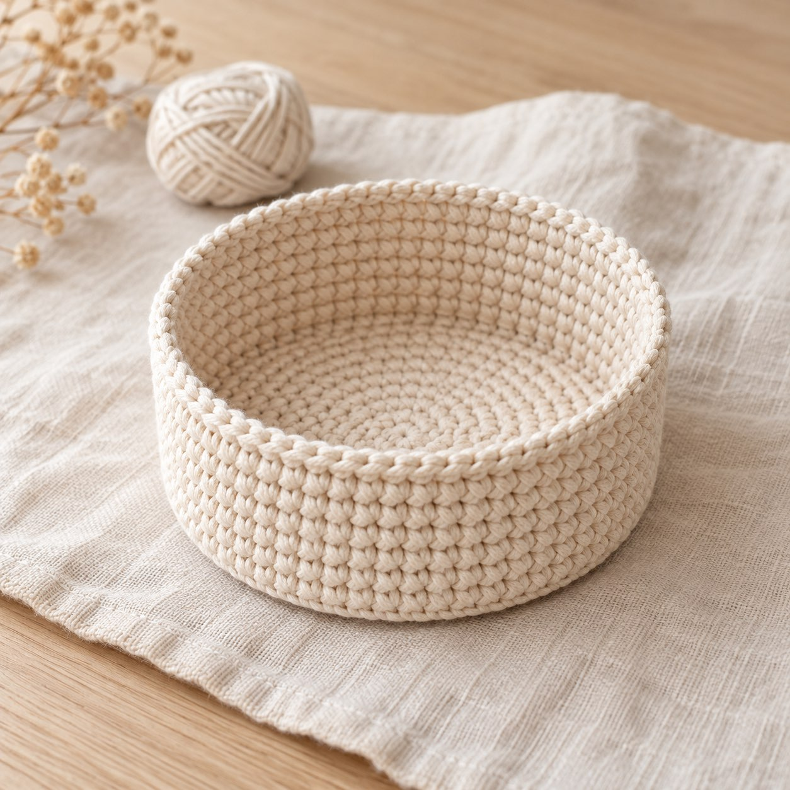
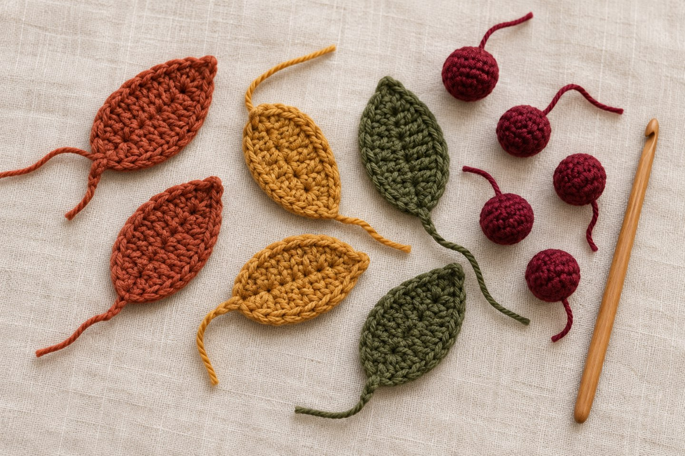
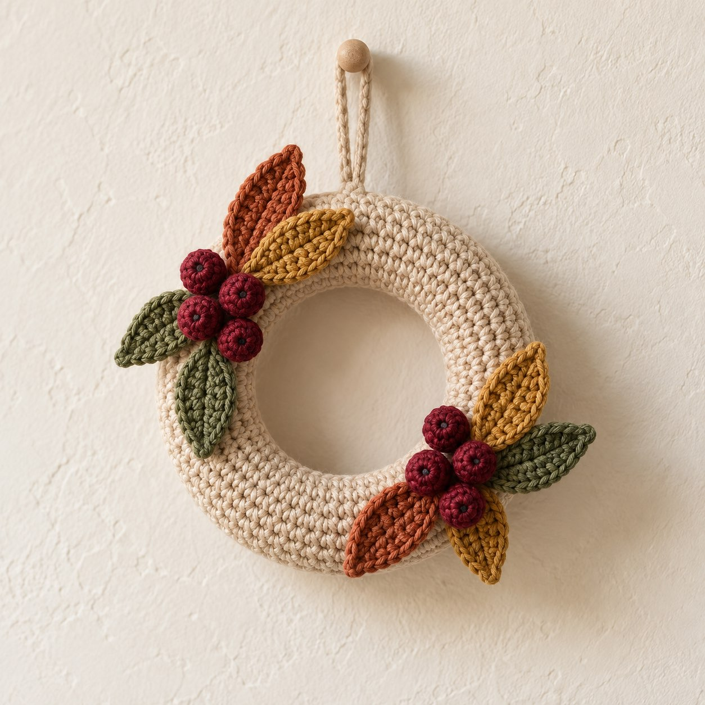
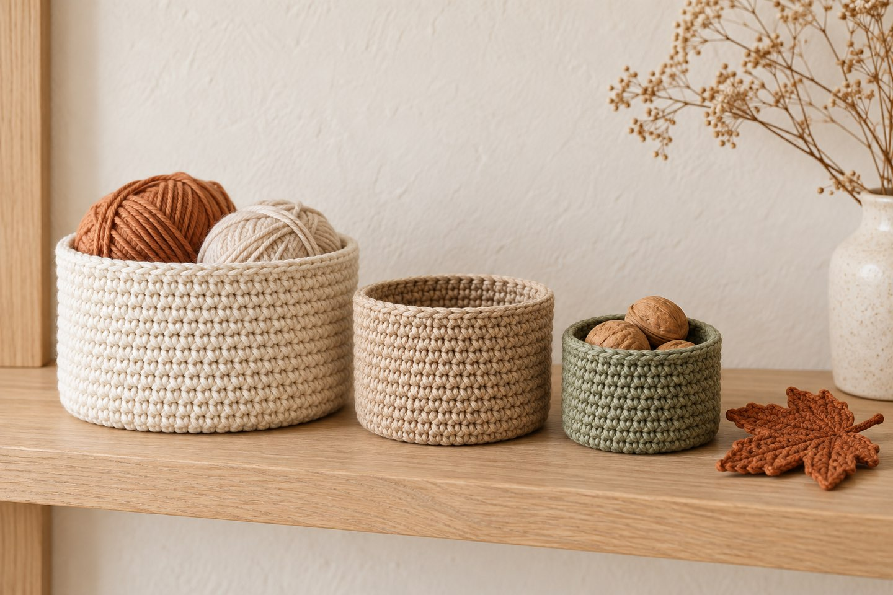

Crochet Fall Decor: Basket & Harvest Wreath – Free Patterns for Beginners

In short
A round basket and a mini harvest wreath are two quick fall projects for beginners. Both are made from single crochet in the round: the basket ends up about 3.5–4 in (9–10 cm) wide and about 2.75 in (7 cm) tall, the wreath is about 3.5–4 in (9–10 cm) across and is decorated with crocheted leaves and berries. You need medium-weight cotton yarn and a 3 mm hook. Further down you'll find free patterns with stitch counts for the basket, leaf, berry and wreath.
As soon as it gets cooler outside, I want fall on the table: leaves, berries and something warm in rust and ochre. Crocheted decor has the advantage that it never wilts and can come out again next year. Here are two projects that together fill one evening: a small basket for candles, nuts or keys and a mini harvest wreath for the door, the wall or the table.
1. Why crochet your own fall decor?
Fall decor in yarn can be made in small pieces and combined again and again. An idea collection on cozycathome includes a leaf garland, acorn caps, pumpkins and a “mini harvest wreath” (see sources). A basket has a second use as well: the Lawson Textile blog recommends crocheted baskets in graduated natural tones that tidy things up in fall and can serve as gift wrapping in December (see sources).
- Small and quick: basket about 1–1.5 hours, wreath with leaves and berries about 2–3 hours (rough guides).
- Easy: only magic ring, single crochet, increase and decrease – all covered in the crochet basics.
- Reusable: the basket also works on the table in winter, and the leaves can become garlands or charms.
2. Which yarn and hook should you use?
For basket and wreath you need yarn that holds its shape. cozycathome recommends cotton yarn for sturdy projects (see sources) and also lists thin wire or cord as supplies. Here is the choice for this pattern:
| Yarn | Advantage | Keep in mind |
|---|---|---|
| Cotton (medium weight, DK/light worsted) | Holds its shape, smooth stitches, great for baskets | Little stretch, hands tire faster with tight stitches |
| Acrylic | Soft, inexpensive, many colors | Basket is less firm |
| Chenille | Fluffy, for berries or the wreath | Slips and is hard to frog |
Use a 3 mm hook. For firmer stitches you can go one size down. How to read the yarn label is explained in Which yarn for crochet beginners?.
3. Which colors suit fall decor in 2026?

For fall 2026, KnitPro names rust, ochre, sage, emerald, burgundy and warm neutrals, among others (see sources). Lawson Textile recommends moss green and beige for baskets. From that comes this palette:
- Rust
- Ochre
- Moss green
- Burgundy
- Beige
- Warm cream
Tip: Crochet the basket in beige or cream and the wreath with leaves in rust, ochre and moss green. Together they look calm.
4. What do you need for which project?
| Project | Size (guide) | Yarn | Time | Level |
|---|---|---|---|---|
| Basket | approx. 3.5–4 in (9–10 cm) wide, 2.75 in (7 cm) tall | approx. 25–30 g | approx. 1–1.5 hrs | Beginner |
| Leaf | approx. 1.5–2 in (4–5 cm) long | Scraps | approx. 10 min | Beginner |
| Berry | approx. 0.6–0.8 in (1.5–2 cm) wide | Scraps | approx. 10 min | Beginner |
| Mini harvest wreath | approx. 3.5–4 in (9–10 cm) across | approx. 30 g plus scraps | approx. 1 hr for the ring | Beginner |
The sizes apply to about 20 stitches per 4 in (10 cm) (single crochet, 3 mm hook, medium-weight cotton yarn). Crochet a gauge swatch first and adjust if yours differs.
Pattern: Round basket

- Size
- approx. 3.5–4 in (9–10 cm) wide, 2.75 in (7 cm) tall (guide)
- Time
- about 1–1.5 hours
- Level
- Beginner
- Yarn
- Cotton, medium weight (DK/light worsted), approx. 25–30 g
- Tools
- 3 mm hook, stitch marker, tapestry needle
Abbreviations (US terms)
MR = magic ring · sc = single crochet · inc = increase (2 sc in the same stitch) · BLO = back loop only · sl st = slip stitch. All abbreviations are listed in the abbreviations guide. Work in continuous rounds. Mark the first stitch of each round with a stitch marker.
Base
- MR, 6 sc (6)
- Inc in each stitch (12)
- *1 sc, inc*, repeat 6 times (18)
- *2 sc, inc*, repeat 6 times (24)
- *3 sc, inc*, repeat 6 times (30)
- *4 sc, inc*, repeat 6 times (36)
- *5 sc, inc*, repeat 6 times (42)
- *6 sc, inc*, repeat 6 times (48)
- *7 sc, inc*, repeat 6 times (54)
- *8 sc, inc*, repeat 6 times (60)
The base is now a flat circle about 3.5–4 in (9–10 cm) across. Put it on the table to check: it should not ruffle. If it ruffles you added too many increases; if it cups like a bowl, too few.
Wall
- Sc BLO in each stitch (60) – this forms the edge between base and wall.
- Rounds 12 through 25: sc in each stitch (60)
- Finish with 1 sl st in the next stitch. Cut the yarn and weave in the end.
For a smaller basket (about 3 in / 7.5 cm wide) stop the base after the round with 48 stitches and crochet the wall with 48 sc per round. For a firmer basket use a hook one size smaller.
Pattern: Leaf and berry

- Size
- leaf approx. 1.5–2 in (4–5 cm) long, berry approx. 0.6–0.8 in (1.5–2 cm) wide (guide)
- Time
- about 10 minutes each
- Level
- Beginner
- Yarn
- Scraps in rust, ochre, moss green (leaf), burgundy or ochre (berry)
- Tools
- 3 mm hook, toy stuffing for the berry, tapestry needle
ch = chain · sl st = slip stitch · sc = single crochet · dec = single crochet 2 together.
Leaf
- Ch 9.
- Sl st in the 2nd ch from hook, then sc in each of ch 3 through 8 (7)
- 3 sc in the 9th ch (leaf tip) (10)
- Continue along the underside of the chain: sc in each of ch 8 through 3 (16)
- Sl st in the 2nd ch (17)
- For the stem ch 3, cut the yarn and weave in the end.
Ch 2 through 9 form the middle of the leaf. If you block the leaf lightly, the shape gets nicer.
Berry
- MR, 6 sc (6)
- Inc in each stitch (12)
- Rounds 3 and 4: sc in each stitch (12)
- Stuff lightly. 6 dec (6)
Cut the yarn, weave it through the last 6 stitches, pull tight and weave in the end. Leave the starting tail for sewing on.
You'll find more leaves and flowers in the pattern Flowers & leaves.
Pattern: Mini harvest wreath

- Size
- approx. 3.5–4 in (9–10 cm) across (tube approx. 12 in / 30 cm, guide)
- Time
- about 1 hour for the ring, plus the leaves and berries
- Level
- Beginner
- Yarn
- Cotton, medium weight, approx. 30 g for the ring (e.g. beige or moss green)
- Tools
- 3 mm hook, toy stuffing, stitch marker, tapestry needle, optional ribbon or cord for hanging
Ring from a stuffed tube
- MR, 6 sc (6)
- Inc in each stitch (12)
- Round 3 until the desired length: sc in each stitch (12)
Keep going until the tube is about 12 in (30 cm) long (the number of rounds depends on your yarn, so measure). Stuff the tube evenly in sections as you go. At the end work 6 dec (6), cut the yarn, weave it through the last 6 stitches, pull tight and weave in the end.
Assembling the wreath
- Lay the tube in a ring. The two tapered ends overlap slightly.
- Sew the ends together with small stitches. You'll cover the spot with leaves later.
- Sew about 6–8 leaves and 5–7 berries around the ring until you like the look. Space them unevenly, that looks more natural.
- For hanging: ch 15, fold into a loop and sew it to the back.
How can you vary the basket and wreath?

- As gift wrapping: fill the basket with small treats in December, so it becomes part of the gift.
- Several sizes: with 36, 48 or 60 stitches in the base (see pattern) you get a set of three baskets in graduated natural tones.
- Color changes: change color every 5 rounds in the wall for stripes and carry the yarn on the inside.
- Wreath in other colors: instead of rust and ochre, a wreath in cream and sage also works in winter.
If you want to keep track of your rounds, the stitch counter helps: it counts rounds and remembers where you stopped.
More fall ideas
Fitting for fall: crochet trends fall 2026, crochet bag charms, crochet wrist warmers and my pumpkin pattern. More ideas for your home are under home decor.
Your turn! Basket or wreath first? Show me your fall decor on Instagram or TikTok! 🍂
Frequently asked questions about crochet fall decor
How big is the crocheted basket?
With 60 stitches in the base and 15 rounds in the wall, the basket is, as a rough guide, about 3.5–4 in (9–10 cm) wide and about 2.75 in (7 cm) tall, at about 20 stitches per 4 in (10 cm). Crochet a gauge swatch first, because the size depends on your yarn and tension.
Which yarn is good for a crochet basket?
Medium-weight cotton yarn with a 3 mm hook works well because it holds its shape. For a firmer basket you can use a hook one size smaller.
How do I keep the basket sturdy?
Crochet tight single crochet, use a slightly smaller hook and shape the edge between base and wall by working that round in the back loop only. That way the wall stands up straight.
How do I attach leaves and berries to the wreath?
Sew them onto the stuffed ring with the starting or ending tail and small stitches. Space them unevenly and place the largest leaves over the seam of the tube ends.
How long does it take to crochet fall decor?
As a rough guide, the basket takes about 1–1.5 hours, the ring for the wreath about 1 hour, and a leaf or berry about 10 minutes each. How long you actually need depends on your experience.
Sources
- cozycathome: 10 fall decor crochet ideas (German; incl. mini harvest wreath, leaf garland, acorn caps; cotton for sturdy projects)
- Lawson Textile: Crochet in fall 2026 – colors and gift ideas (German; baskets in natural tones as decor and gift wrapping)
- KnitPro: Fall 2026 Trends – what should you knit or crochet (colors and techniques)